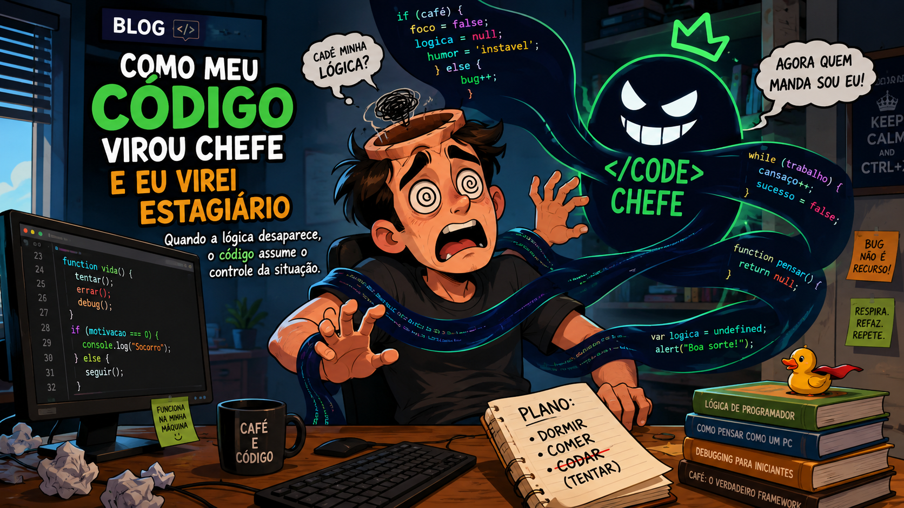

Esta parte será sobre programação
Uma história divertida sobre como pequenos erros de código podem causar grandes aventuras.saiba mais

Quando a lógica desaparece, o código assume o controle da situação.saiba mais